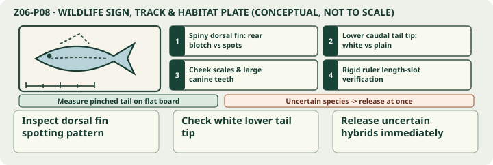

Z06-P08 · Hunting and fishing · New manuscript
Positive Fish Identification: Walleye, Sauger and Yellow Perch
Distinguish closely related Percidae species accurately to comply with separate possession limits, length slots, and border rules.
When it applies · Inland lakes and large river systems across Minnesota.
Equipment · Current MN DNR Fishes of Minnesota guide, measuring board.

Actions
- Compare multiple anatomical traits: walleye typically show a dark blotch at the rear base of the spiny dorsal fin and a white lower tail tip without neat rows of spots across the dorsal membrane.[H06]
- Distinguish sauger by distinct rows of dark spots on the spiny dorsal fin, rough cheeks, and dark saddle blotches without the bright white lower tail tip.[H06]
- Recognize yellow perch by vertical dark side bars and lack of large canine teeth, releasing any uncertain walleye-sauger hybrid when length or bag limits differ.[H01, H06]
Failure recognition · Mistaking a protected-slot walleye for a sauger or juvenile perch violates length and aggregate possession regulations.[H01, H06]
Verify · Dorsal fin markings, tail tip, mouth structure, and measured length are verified against DNR species keys before retention.[H01, H06]
Stop or change course · Stop and immediately release any fish whose species identification or legal slot compliance remains uncertain.[H01, H06]
Evidence and editorial notes
- H01 · Minnesota DNR · Minnesota Fishing Regulations (Current web edition)
- Section: Licensing, seasons, limits, and waterbody-specific rules · Conditions: Minnesota angling across inland, border, and designated waters
Support: Anglers must hold a valid license unless explicitly exempt and verify current season dates, possession limits, size slots, and special waterbody rules before fishing.
Limitations: Regulations change annually and differ on border waters, trout streams, and tribal/ceded territories; no emergency creates an automatic legal exemption. · Conflicting evidence: None noted.
Editorial note: Establishes Z06 fishing authority gate. · Specialist reviewer: Minnesota DNR fisheries and legal reviewer
Primary source · checked 2026-11-25 - H06 · Minnesota DNR · Fishes of Minnesota Species Reference (Current web edition)
- Section: Positive fish species identification before keeping catch · Conditions: Identifying regional game, rough, and protected fish species
Support: Accurate species identification using fin counts, mouth structure, markings, and body profile is mandatory to comply with limits and protected-species rules.
Limitations: Juveniles and hybrids can resemble restricted species; release immediately when positive identification is uncertain. · Conflicting evidence: None noted.
Editorial note: Connects Z06 identification to lawful harvest. · Specialist reviewer: Fisheries biologist
Primary source · checked 2026-11-25
Source lineage · New manuscript (Z06 P17 species documentation) · Classification · New manuscript.